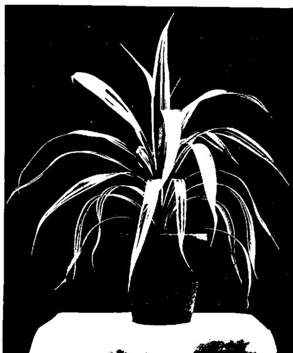

XXXI. Some Good Decorative Plants
Description
This section is from the book "Indoor Gardening", by Eben E. Rexford. Also available from Amazon: Indoor Gardening.
XXXI. Some Good Decorative Plants
PERSONS get into ruts in their selection of plants for decorative purposes, as they do about most other things. In nearly every home, at the present time, where any plants are grown, we find the Palm. But if we ask the owner of that home why she does not grow the Aspidistra, the Araucaria, the Pandanus, or the Agave, the chances are that she will tell us that she does not know much about these plants. She has confined her attention to the Palm because it is popular and ornamental, when well grown, and is supposed to be better adapted to amateur culture than anything else in decorative-plants.
Now the fact is, there are other plants of a decorative character really much easier to grow, and grow well, than the Palm. And some of them are quite as attractive, in a different way. Those who are fond of a change will do well to take up some of these plants. After giving them a trial I am sure they will be delighted with them.
At the head of the list I would place the Aspidistra. Why it has never become more popular with the rank and file of plant-growers in this country I have never been able to understand. In Europe, and especially in Paris, we see it used in great quantities, and with exceedingly fine effect. It may lack the stateli-ness of the Palm, but what it lacks in this respect it makes up for in its profusion of foliage, its rich coloring, and the wonderful ease with which it is grown. For any one who can grow a Geranium can grow the Aspidistra, and grow it to perfection. Indeed, it requires much less care than that plant.
The writer has a plant about ten years old, growing in a fourteen-inch pot. It has, by actual count, over two hundred leaves, from eighteen to twenty-four inches in length, not counting in the leaf-stalk. The leaves of this plant are all sent up from the roots, as the plant never has any branches. In color they are very dark, rich green with shining surface, striped with creamy white. In texture, they are thick and firm, with a leathery character that enables them to successfully resist dust and the debilitating influences of dry air. This plant has not been repotted for over seven years, nor has any fresh soil been given it. It subsists on food furnished in the form of a liquid fertilizer, which is applied regularly, but is never very strong. Treated in this way, this plant has remained in perfect health, and has done more decorative duty than any other plant I have ever grown. For filling a corner, for ornamenting the porch, or the steps, or taking a prominent place in the decoration of the hall it has proved invaluable. One of its most meritorious features is its ability to get along with less direct light than any other plant I have any knowledge of. It is therefore adapted to locations where there is no strong light-nooks and corners where other plants would soon languish seeming to suit it perfectly. Because of its low, spreading habit it can be made to do duty in many places where Palms would not work in well. Give it all the water it needs, feed it as advised, and wash it from time to time to free its leaves from dust and enable their rich coloring to show effectively, and it will ask no more of you. The variety described will be found catalogued as A. lurida variegata. There is a plain-leaved kind quite as easy to grow, but not as attractive in coloring. Give this plant a trial, and I venture the prediction that you will prefer it to any Palm you have ever grown-and that is saying a great deal for it. It never gets sick, no insect ever attacks it, and it needs no coaxing.
The Araucaria is another plant that a great many persons will prefer to the Palm, after they have given it a trial. This plant is sometimes called the Norfolk Island Pine. It has heavy needle-like foliage, somewhat similar to that of our native Hemlock, only not quite so flat in arrangement. Its branches are produced in whorls, generally of five, but sometimes six or seven. These whorls rise one above the other in great regularity, and the general effect is that of a tree trained in pyramidal form. It is of quite rapid growth, and any time your specimen becomes too large for your window you can readily trade it to your local florist for a smaller specimen, or for other plants, for he can make excellent use of it in working out his decorative schemes. For church decoration it is admirable. This is a plant which ought to occupy a prominent place in your plant-room, where it will be found much more effective than in the window, as the latter place does not afford it an opportunity to display its beauty effectively.
It is of easy culture. Give it a soil of garden-loam made friable by the addition of sand. Water it regularly, but do not keep it wet. Shower it all over as often as possible-this to keep it clean, and prevent the red spider, its only enemy, from doing it harm. It likes plenty of good light, but does not seem to care for sunshine. Apply a fertilizer whenever a new whorl of branches is being produced. It is so entirely different from the Palm in all respects that those who have grown that plant for some time will appreciate its decorative ability, by way of change.
The Pandanus, or Screw Pine, is another extremely beautiful plant for decorative purposes, especially the variety catalogued as P. Veitchii. This has a stripe of white running the entire length of the leaf. The leaves are long, and narrow, and curve gracefully out from the center of the plant, thus making it very effective for the center of a group. The edges of the leaves are thickly set with sawlike teeth terminating in a thorn, making it a most unpleasant plant to handle, unless your hands are well protected with leather gloves. To grow it well, give it a spongy soil, good drainage, plenty of light, and a rather high temperature. Shower it frequently. If you find the red spider on it, wash it with a weak solution of fir-tree oil, taking care to start at the base of the leaf and draw your cloth toward its tip. If this is done, you will have no trouble with its needle-like thorns, but begin at the top and work downward and you will find it as prickly as any Cactus, and far more aggressive, as its spines are longer than those of any Cacti usually found in the window-garden.
Screw Pine (Pandanua Vietchii).
For those who like something very striking and out of the common, there are few plants that will give more pleasure than Agave Queen Victoria. This plant is a member of the Century-plant family. It has thick, succulent leaves of pale green, broadly banded with creamy white or clear yellow. These are terminated with a thorny point quite like that of some varieties of the native Thorn Apple. It is able to stand all kinds of neglect and hard usage, and flourishes under most unfavorable conditions. But it must never be subjected to frost. For the decoration of the veranda, in summer, it is simply superb, its tropical appearance making it very attractive and strikingly effective. In winter it can be made use of in the hall. It is of the easiest culture. It readily adapts itself to living-room conditions. No insect ever attacks it, so far as my experience with it goes, and it is subject to no disease. It grows well in any soil in which loam is the principal ingredient. Not a great deal of water is required. Nor is it exacting as to light.
All the plants of which mention has been made in this chapter will afford the home gardener great pleasure, if she is willing to give them the care necessary to bring them to full development. They make it possible to have variety, where there has been but little because of the impression that there was not much use in the amateur's attempting to grow anything but the Palm and a Fern or two.
Continue to: